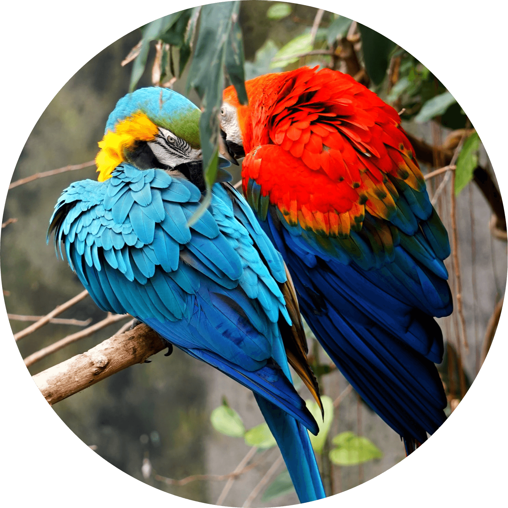

Innan du adopterar
Om du leker med tanken att välkomna en papegoja i din familj, bör du överväga detta först: Papegojor kan leva upp till 80 år! Det betyder att dessa lekfulla och kärleksfulla varelser är ett långsiktigt engagemang. Full av liv och personlighet kommer en papegoja att bli en del av din familj på nolltid om du tänker på tips listade nedan. Genom att lära dig vad du ska tänka på innan du skaffar en papegoja kommer du se till att ditt nya husdjur lever ett bekvämt och glatt liv.
Viktigt att tänka på
Innan du adopterar, se till att du har tillräckligt med tid att ta hand om fågeln, de behöver mycket uppmärksamhet och tid eftersom fåglar är djur som döljer när de är svaga,

för i naturen dör de svaga vanligtvis först. Så de döljer till exempel sjukdomar tills de inte orkar mer. Du måste spendera en hel del tid med dina fåglar, så se till att du har tillräckligt med tid att spendera tid med dina fåglar, leka och umgås.
Vissa fåglar gillar inte att stanna ensamma, så se till att du adopterar parvis om du vet att du kommer behöva lämna ditt hem ofta. Detta skiljer sig såklart från art till art, men de flesta papegojarterna behöver mycket umgänge!
Se till att du har rätt miljö för dina fåglar genom att se till att du har en stor bur med leksaker för att underhålla fåglarna och så att de kan sträcka på sina vingar.
Lär dig om vad som är dåligt och vad som är bra för papegojor, vissa vardagliga livsmedel som vi människor äter kan döda fåglar och fåglar försummas ofta när det gäller deras näring. De behöver mycket näringsrik mat som får dem att känna sig fulla och mata dem ordentligt med tillräckligt med vitaminer och kalcium och protein. Du kan läsa mer om hur du sköter och vårdar om papegojor på sidan Skötsel & omvårdnad.
Varför du ska adoptera en papegoja!
Papegojor är väldigt underbara varelser som har en psykologi som liknar den psykologi som människor har, de är naturligt sociala djur, de är väldigt tillgivna och mycket lojala med rätt träning. Och såklart ska du inte glömma att en hund eller en katt inte riktigt kan prata som papegojor kan, eller hur?
De är riktigt söta djur som kan leva mycket länge med ordentlig vård och näring, om du tränar din papegoja ordentligt kan du gå till parken tillsammans och papegojan kan flyga allt de vill ha och ändå komma tillbaka till dig! I allmänhet anses De vara exotiska husdjur och de är inte för alla, men om du är redo för utmaningen.. så lovar jag att du inte kommer bli besviken!
Papegoj-quiz
Har du nu samlat på dig all kunskap och lärt dig mer om papegojor? Testa din papegoj-kunskap i den roliga papegoj-quizen nedan och se om du har vad som krävs för att bli en ägare! Klarar du att få 5/5 rätt? Kan du inte klura ut frågorna så kan du lära dig mer på sidorna Om papegojor och Skötsel & omvådnad